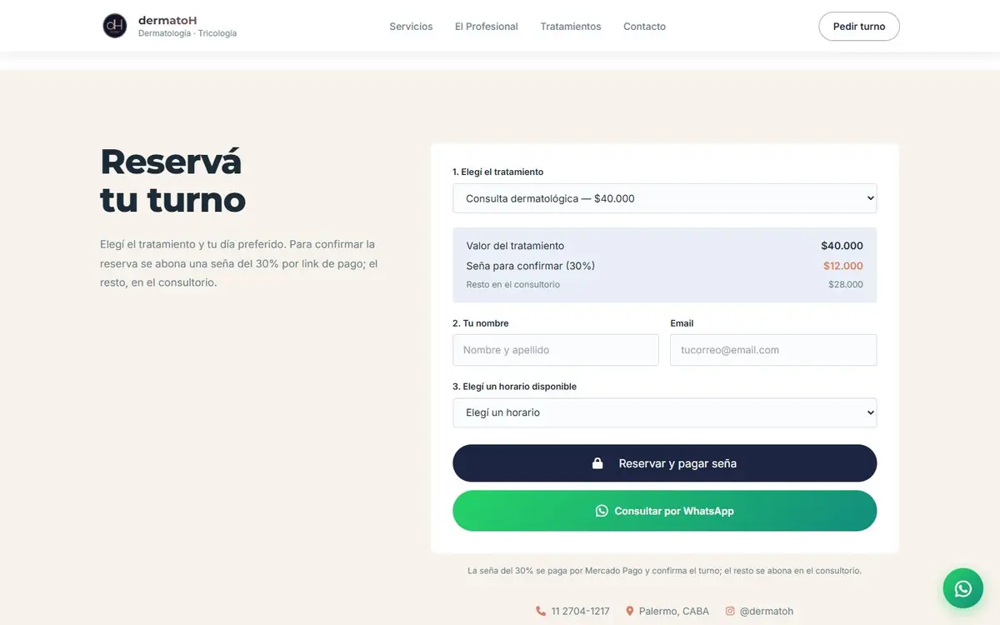
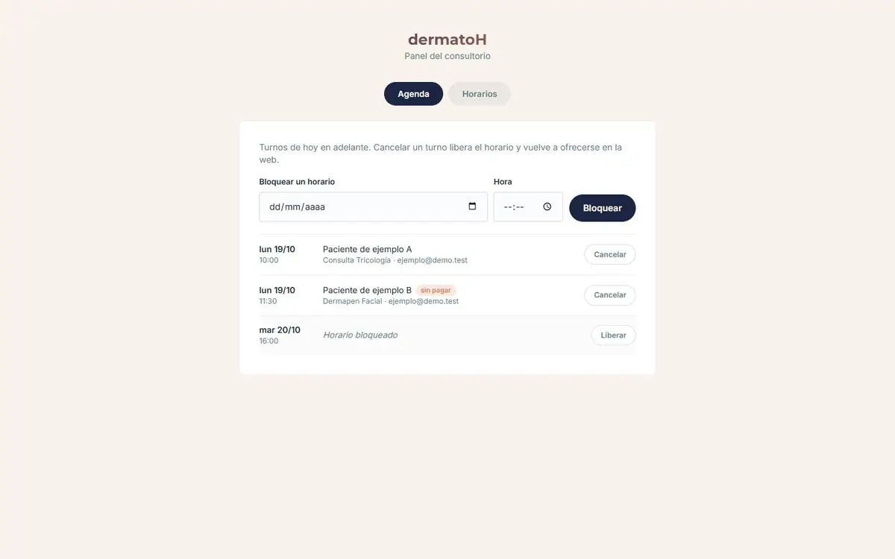

El problema
Los turnos se coordinaban por WhatsApp, a mano. Cada reserva era una conversación con idas y vueltas para encontrar un horario libre.
El consultorio necesitaba que el paciente pudiera elegir tratamiento y horario solo, dejar una seña que confirme el compromiso, y que el médico se entere sin revisar nada a mano. Y que nadie pueda reservar dos veces el mismo horario.
Qué hice
- Sitio público
- Servicios, profesional, lista de tratamientos con precios y ubicación. El WhatsApp queda siempre a mano como canal alternativo.
- Reserva con seña del 30%
- El paciente elige tratamiento y un horario libre, ve cuánto paga ahora y cuánto en el consultorio, y va al checkout de Mercado Pago. El horario queda tomado mientras paga y se libera solo si no completa el pago.
- Confirmación verificada
- Cuando Mercado Pago avisa un pago, el servidor lo consulta con su propio token antes de confirmar nada: nunca le cree a la URL de retorno ni al cuerpo del aviso. Si llega un pago que no cierra (importe distinto, tarde, turno cancelado), queda marcado para revisar.
- Panel del consultorio
- Agenda de turnos, bloqueo de horarios puntuales, horario semanal con días especiales y una lista de “pagos a revisar” para no perder plata cobrada que no confirmó un turno.
Más pantallas


Stack
Frontend
- HTML
- CSS
- JavaScript vanilla
Sin dependencias en el sitio: solo fetch.
Backend
- Vercel Functions
- Neon Postgres
- Mercado Pago API
- Resend
Funciones serverless en São Paulo, junto a la base. Emails al médico y al paciente cuando se confirma un turno.
Decisiones
Neon en vez de Supabase. Arranqué con Supabase, pero el plan gratuito pausa el proyecto por inactividad y una vez dejó el sitio sin turnos. Migré a Neon, que se reactiva solo con la primera consulta.
Un turno por horario, en la base. Un índice único parcial sobre los turnos activos hace que dos personas no puedan tomar el mismo horario aunque reserven al mismo tiempo. No depende del código de la aplicación.
El pago se registra en una sola función SQL. registrar_pago decide en una transacción si el pago confirma el turno o va a revisión, así un aviso repetido de Mercado Pago no duplica nada. Tiene su propio test de 11 casos.
Verlo andando
Está publicado y se puede usar.